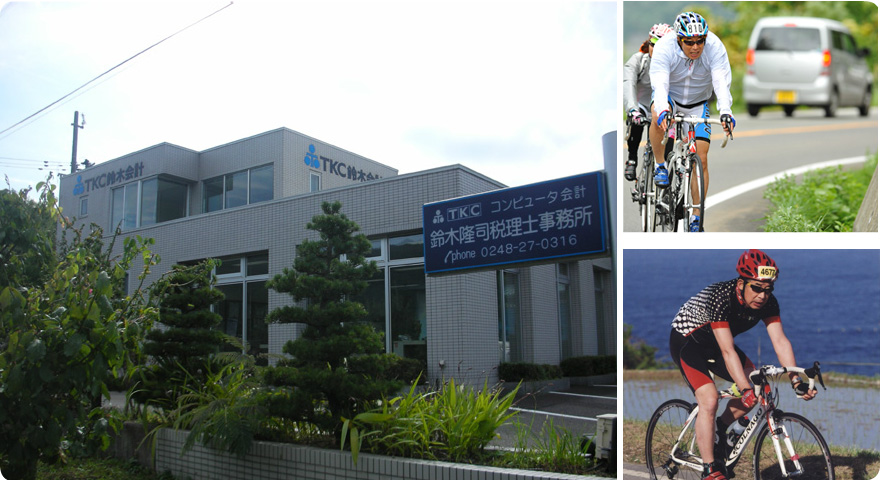

経営革新と黒字決算の実現を支援しています
当事務所は、毎月、貴社を巡回監査し、会計資料や会計記録の適法性と正確性を確保しながら、スピーディに月次決算を行い、最新の経営成績と財政状態を報告します。また、ＴＫＣシステムの経営者支援システム（財務情報システム・人事給与システム等）により日々の業績がわかります。決算対策支援・時期経営計画策定システムでは来期の経営計画が立てられます。
事務所紹介
所長挨拶
私は税理士事務所を開設してから今日まで、多方面の顧問先のお客様と信頼の絆を築いていくことを重点においてきました。
税務、会計はもちろん他の些細なことでもお悩みごとがございましたらお気軽に当事務所までご相談下さい。プライバシーを守り、一生懸命お客様に満足していただくように努力させていただきます。
税理士 鈴木 隆司
所長の自己紹介
【専門（得意な）仕事】
- 相続税の申告
- 贈与税の申告
- 経営計画書の作成支援
- 販売・購買システムの立ち上げ支援
【趣味】
- 山登り（体力強化トレーニングを兼ねてやってます。）
- ゴルフ（ハンデ21）
- 自転車（体力づくり）
【特技】
- スキー（全日本スキー連盟 準指導員／公認スキーパトロール13期生）
所長のレースプロフィール（1995〜2002）
- 1995年
- ポルシェ・カレラカップジャパン参戦（デビュー初戦：2位 SUGOのコースレコードを記録）／全日本ＧＴ選手権に参戦／ポッカインターナショナル鈴鹿1000kmに参戦
- 1996年
- ル・マン24時間レースに出場（ＬＭＧＴ2クラス：5位 総合18位）
- 1997年
- ル・マン24時間レースに出場 リタイア／ポッカインターナショナル鈴鹿1000km：11位
- 1998年
- ポッカインターナショナル鈴鹿1000km：8位
- 1999年
- ポッカインターナショナル鈴鹿1000km（インターナショナルクラス：3位 総合13位）／ル・マン富士1000ｋｍ（ＧＴクラス：2位 総合14位）
- 2000年
- ポッカインターナショナル鈴鹿1000ｋｍ（ＧＴ300クラス：3位 総合：7位）
- 2001年
- デイトナ24時間レースに出場（ＧＴクラス：8位 総合：12位）／ポッカインターナショナル鈴鹿1000km（ＧＴクラス：3位 総合：9位）
- 2002年
- デイトナ24時間レースに出場（ＧＴクラス：Ｒ）

福島県白河市外薄葉の事務所外観と、所長の趣味である自転車
鈴木隆司税理士事務所はＴＫＣ全国会会員です。ＴＫＣ全国会は、租税正義の実現をめざし関与先企業の永続的繁栄に奉仕するわが国最大級の職業会計人集団です。
東北税理士会所属
業務案内
毎月、会計専門家が貴社を訪問し、巡回監査を通じて経営革新と黒字決算の実現を支援します。
関与先の記帳指導
正しい帳簿記録の作成を支援し、会計の信頼性を確保します。
巡回監査業務
毎月、貴社を巡回監査し、会計資料や会計記録の適法性と正確性を確保しながら、スピーディーに月次決算を行い、最新の経営成績と財政状態を報告します。
経営者支援システム
- 戦略財務情報システム (FX2)
- 戦略人事給与情報システム (PX2)
- 戦略販売・購買情報システム (SX2)
業種別会計
- ＴＫＣ医業会計データベース（MX2・MX3）
- 建設業会計データベース（DAIC2/DAIC3）
- 運送業
決算対策支援・次期経営計画策定システム
ＴＫＣ継続MASシステム
税務申告・相談
相続税申告・贈与税申告・法人税・所得税等、幅広い税務に対応します。
相続税
相続税額の早見表を用いた事前シミュレーションから、申告書作成まで総合的にサポートします。
企業防衛
ＴＫＣ企業防衛データベース（TK企業／大同生命保険株式会社）
ＴＫＣリスクマネジメントサービス
（TK企業／東京海上日動火災保険株式会社）
業務成績
当事務所は平成13年6月～平成21年5月までの8年間において巡回監査率100％を達成し、ＴＫＣ全国会より表彰されました。皆様のご協力感謝致します。
また、ＴＫＣ全国会より、創業・経営革新アドバイザーとして認定されました。国内中小企業の成長・貢献に発展すべく、巡回監査を通じて創業と経営革新の支援をさせて頂きたいと思っております。
税理士法第33条の2による書面添付
ＴＫＣ全国会では、税理士法代33条の2第1項に定める書面等を申告書に添付する運動を推進しています。この運動は、ＴＫＣ会計人が関与先企業のために作成する税務申告をより適正なものとし、独立した公正な立場から適正申告納税の実現を図ることを通して、関与先企業の健全経営に寄与することを目的としています。
継続MASシステム
毎年、黒字決算を実現するためには、業績管理(PDCA)メカニズムを社内に組み込むことが重要です。「継続MAS」は経営者のビジョンに基づいた中期経営計画と、次年度の業績管理のための短期経営計画を提供します。さらには計画と実績を検証し、問題点の発見・対策を検討する業績検討会や戦略的決算対策検討会のツールとして活用することにより、PDCAメカニズムの構築を促進することができます。
戦略財務情報システム FX2
毎年、黒字決算を達成するためには、実践的管理会計<変動損益計算書>の活用が重要です。ＴＫＣのパソコン会計ソフト「FX2」は、<変動損益計算書>から自社の「商品/市場戦略」と「業績管理」の成果を分析し、高コスト体質を解消し、高付加価値を生むビジネス・モデルを作り上げる指針を得ることができます。
ＴＫＣ会計人の行動指針
毎月、会計専門家が貴社を訪問し、次の業務を支援します。
1 貴社の永続的な繁栄のために、活力を生む経営革新を支援します。
- 同業他社（黒字・優良企業）と比較して、次期の目標設定を支援します。
- 目標必達のために、短期・中期経営計画をご一緒に練り上げます。
- 確実に目標達成できているか、毎月検証し、分かりやすく報告します。
- １人当たりの賃金は高く、労働分配率は低い経営の実現を支援します。
2 毎期、黒字決算を実現する社内のメカニズムづくりを提案します。
- 法令に完全準拠した会計帳簿書類の作成を支援します。
- 迅速かつ正確に月次決算を実施し、前月までの業績を報告します。
- 期末３か月前には戦略的決算対策を実施し、次の打ち手を検討します。
- 自己資本比率とキャッシュフローの改善を目標に経営アドバイスします。
3 地元の金融機関や得意先／仕入先からの信頼度アップに貢献します。
- 外部に公開する決算書が正しい手続きで作成されたことを証明します。
- 前月末までの試算表（B/S、P/L）を、速やかに提出できるようにします。
- 会計記帳においては、過去記録の修正・改ざんを完全に防止します。
- コンプライアンス（法令・規範遵守）を重視する経営風土が定着します。
4 税務のプロフェッショナルとして法令に基づく的確なアドバイスをします。
- 専門家として、税法を分かりやすく解説し、正しい税務対策を提案します。
- 正しい税務申告のために（税理士法第33条の2による）書面添付を実践します。
- 最新の税法等に基づき土地・自社株等を評価し、事業承継を支援します。
- 個人の財産運用における税務上のご質問にも的確にお答えします。
5 ＩＴ経営革命をサポートします。
- ビジネスに役立つインターネットとデータベースの有効活用を提案します。
- 会計ソフト（FX2）により、月次決算から日次決算への移行を実現します。
- 部門別の貢献利益、商品グループ別の利益動向が正確に把握できます。
- ネットワークによる本支店の業績管理、リアルタイム経営を実現します。
6 創業・ベンチャー起業・事業転換・株式公開を支援します。
- 小売店から専門病院までのベスト・ビジネスモデルを提示します。
- 採算性と投資効率の観点から信頼される創業計画づくりに貢献します。
- 経営者が事業に専念できるように、社内の諸制度を整備します。
- 専門家として、創業者の立場に立った株式公開プランを提案します。
事務所概要
| 事務所名 | 鈴木隆司税理士事務所 |
|---|---|
| 所在地 | 〒961-0062 福島県白河市外薄葉15-1 |
| 電話番号 | 0248-27-0316 |
| FAX番号 | 0248-23-4437 |
| 営業時間 | 8:30〜17:20（土曜・日曜・祝日除く） |
| 開業 | 1978年 4月 1日 |
| 法人設立 | （株）マネジメント・オフィス・スズキ 1988年 6月22日 |
| 資本金 | 1000万円 |
| 所属 | ＴＫＣ全国会会員／東北税理士会所属／経営革新等支援機関 |
料金について
当事務所の報酬については業種形態や規模によって変化します。一律にいくらというのではありません。
詳しくは面談により決定いたします。
交通案内
- 所在地
- 〒961-0062
福島県白河市外薄葉15-1 - 電話番号
- 0248-27-0316
- 営業時間
- 8:30〜17:20（土曜・日曜・祝日除く）